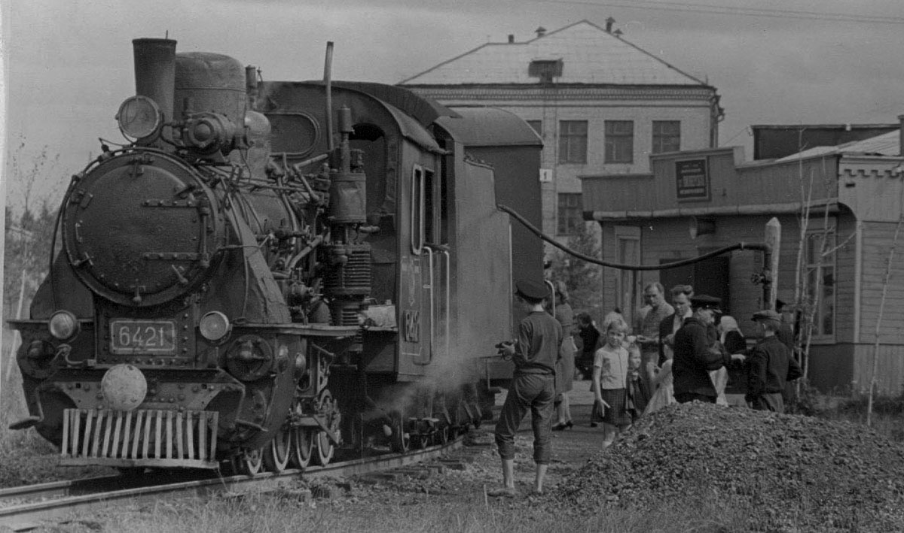
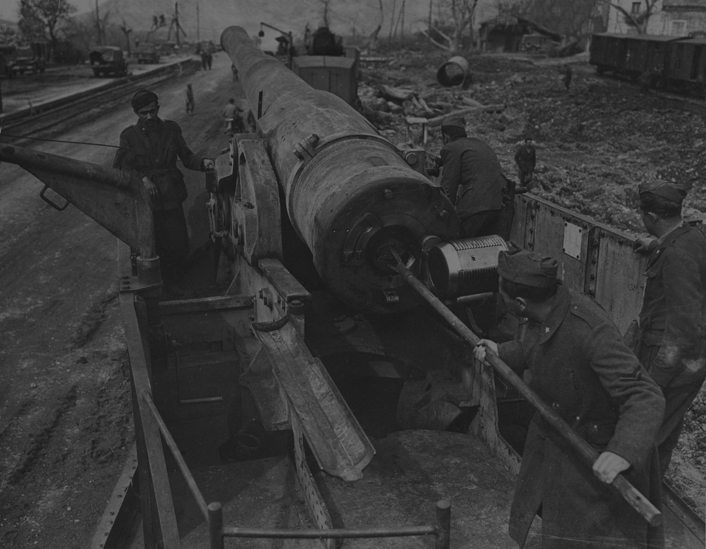
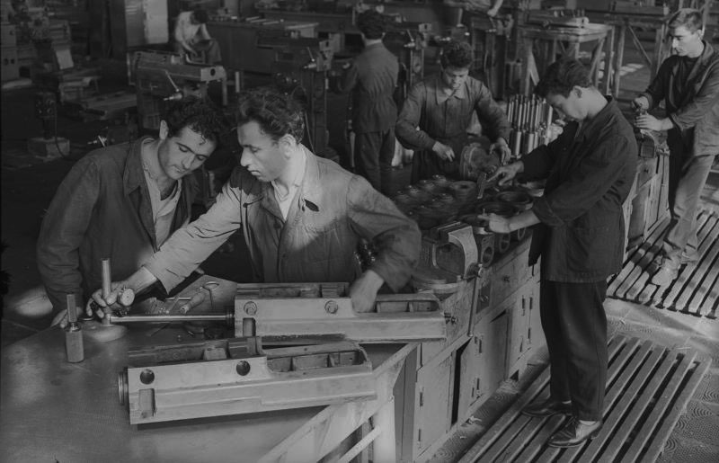
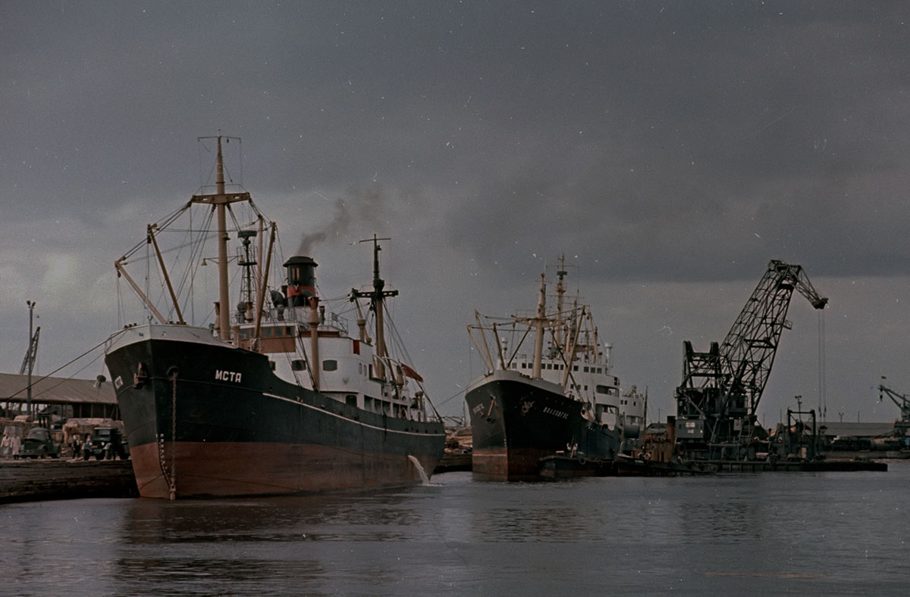
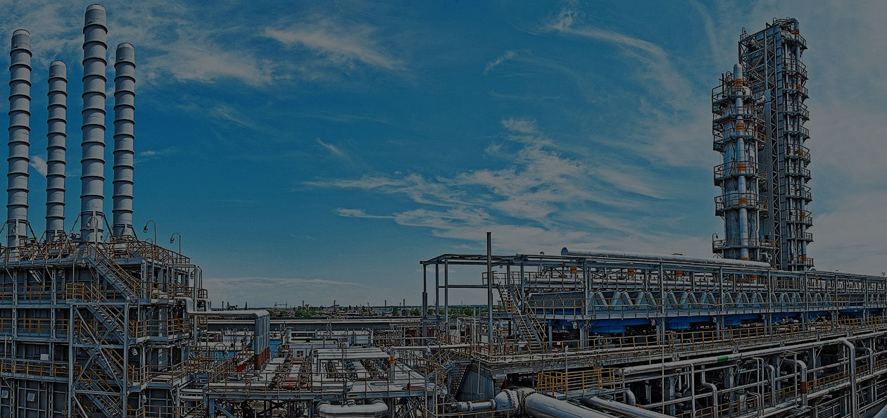
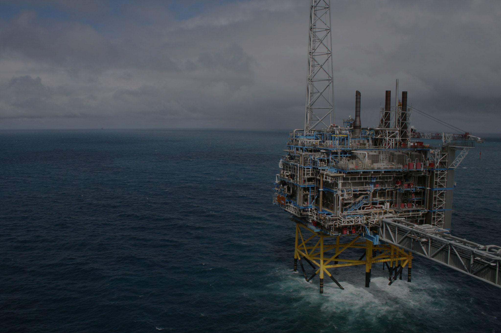
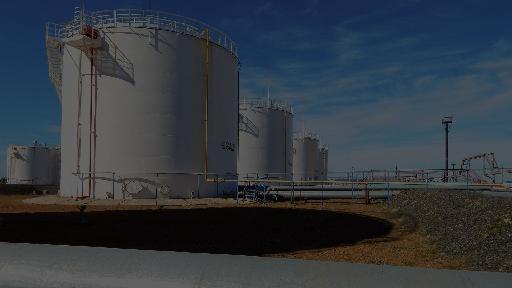
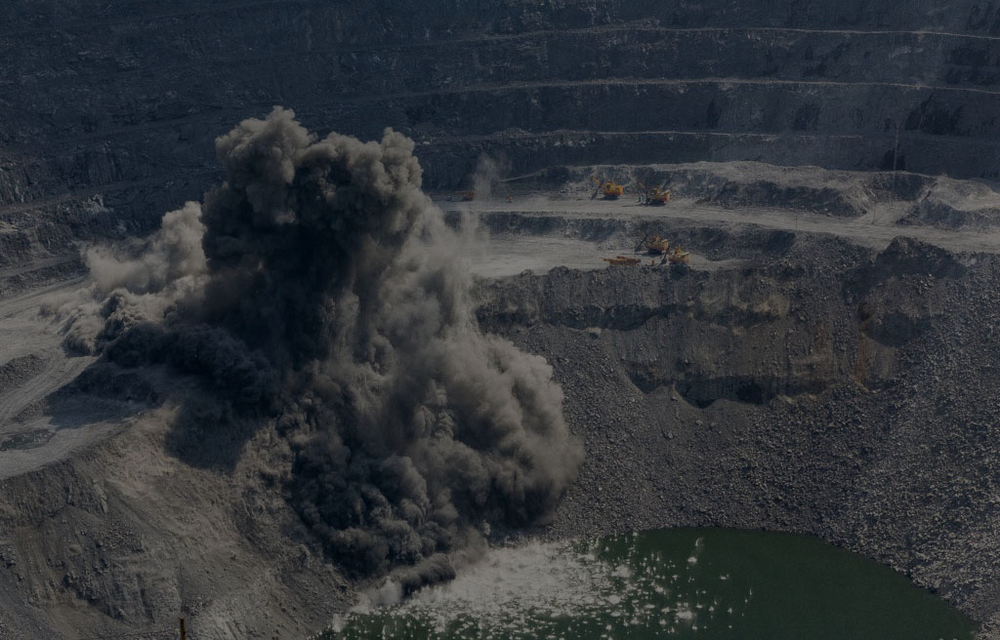

1933
120 человек
Оборот 120 млн рублей в год

1941-1945
Всё для фронта,
всё для победы

1955
Начало импорта и экспорта
нефтяного, горно-шахтного и насосно-компрессорного оборудования

1958
Впервые,
объединение закупило лицензию на производство судовых изделий

1986
229 млн $
Строительство газопроводов в Алжире

1983-1990
32 млн $
Поставка буровых установок для «Баукема экспорт-импорт», Германия

1990
229 млн $
Строительство газопровода Насирия-Багдад

СЕЙЧАС
Более 200 проектов
в 28-ми странах мира
История
Акционерное Общество «Внешнеэкономическое объединение «Машиноимпорт» (АО «ВО «Машиноимпорт»), далее-Общество, ведет отсчет своей истории с 31 октября 1933 года. На первых этапах своей деятельности «Машиноимпорт» осуществлял импорт горнозаводского, металлургического, энергосилового, транспортного оборудования и судов.
С 1948 года АО «ВО «Машиноимпорт», наряду с импортом, осуществляет также экспорт машинотехнической продукции, в том числе подъемно-транспортного, судового оборудования, железнодорожного подвижного состава. С 1955 года, в соответствии с решением руководства Министерства внешней торговли, в сферу деятельности Объединения были включены импорт и экспорт нефтяного, горно-шахтного и насосно-компрессорного оборудования.
В последующие годы, на основании указанного решения, с участием АО «ВО «Машиноимпорт» были сооружены трансконтинентальные газопроводы: (Оренбург-Западная граница, Уренгой-Помары-Ужгород); обустраивались крупные нефтегазовые месторождения (Самотлорское, Астраханское, Тенгизское, Карачаганакское); осуществлялись строительство и эксплуатация гигантов угольной промышленности России – Нерюнгринского угольного комплекса в Южной Якутии и Кузнецкого угольного бассейна. На многих отечественных нефтеперерабатывающих заводах эксплуатируется оборудование, поставленное по контрактам «Машиноимпорта».
В активе «Машиноимпорта» реконструкция и модернизация морских портов, закупка и монтаж комплексов производительностью 5 млн т. угля в год каждый, для портов Восточный в Находке и Южный в Ильичевске, поставки уникального оборудования для Астраханского газоперерабатывающего завода, легендарная «сделка века» «газ-трубы» и др.
Всего «Машиноимпорт» осуществил поставки более четверти от общего объема машинотехнического оборудования для народного хозяйства страны на сумму около 70 миллиардов долларов.
По мере продолжения роста товарооборота, из состава «Машиноимпорта» были выделены такие известные на мировом рынке внешнеторговые объединения как: «Судоимпорт», «Машиноэкспорт», «Энергомашэкспорт», «Автопромимпорт», «Металлургимпорт». В 1998 году, став правопреемником «Техноэкспорта» и «Цветметпромэкспорта» в части строительства за рубежом объектов нефтяной, газовой и угольной промышленности, объединение расширяет деятельность на мировом рынке. При техническом содействии «Машиноимпорта» в 28 странах мира построено более 200 крупных объектов топливно-энергетического комплекса.
Среди традиционных партнеров «Машиноимпорта» крупнейшие фирмы Австрии, Бельгии, Великобритании, Германии, Италии, США, Финляндии, Франции, Швейцарии, Японии и других развитых стран.
Важным направлением внешнеэкономической деятельности «Машиноимпорта» является инвестиционное сотрудничество с зарубежными странами по реализации проектов в топливно-энергетическом комплексе. Объединение совместно с российскими организациями и иностранными компаниями осуществляет работы от разведки месторождений до сдачи на условиях «под ключ» объектов по добыче, хранению, транспортировке и переработке нефти, газа и угля. Программа сотрудничества с зарубежными партнерами предусматривает также выполнение проектно-изыскательских работ, поставку оборудования и материалов, командирование специалистов, обучение персонала Заказчика.
`
География деятельности «Машиноимпорта» обширна.
В нефтяной и газовой промышленности – это разведка и обустройство месторождений в Индии, Йемене, Кувейте, Ливии, Польше, на шельфе Болгарии, строительство нефти-газопроводов в Алжире, Греции, Ливии, Нигерии, Финляндии, сооружение нефтебаз в Анголе, Афганистане, Вьетнаме, Лаосе, Нидерландах.
В угледобывающей отрасли это строительство шахт и обогатительных фабрик в Болгарии, Индии, Китае, Югославии и других странах. Во Вьетнаме около 80% угля добывается на объектах, построенных при содействии «Машиноимпорта».
Реализуя свои проекты на международном рынке в сотрудничестве с крупнейшими российскими компаниями и организациями (ОАО НК «Лукойл», ОАО НГК «Славнефть», ОАО «Татнефть» и другими), эффективно объединяя их производственные и финансовые возможности со своим опытом, знанием конъюнктуры рынка и долгосрочными деловыми отношениями с зарубежными партерами, «Машиноимпорт» успешно решает вопросы расширения сотрудничества с зарубежными странами. Всего «Машиноимпортом» реализовано более 200 проектов в 28 странах Европы, Азии, Африки и Латинской Америки. Общий объем экспорта составил свыше 7 миллиардов долларов.
В последние годы «Машиноимпорт» существенно диверсифицирует свою деятельность. В России реализовано большое число контрактов по строительству объектов социальной и экономической направленности.
Среди заказчиков «Машиноимпорта» органы федеральной власти России, правительства Москвы и Московской области, Санкт-Петербурга, муниципальные власти крупных региональных центров (Новосибирск, Тула, Самара), компании и организации таких стран, как: Белоруссия, Казахстан, Узбекистан, Молдова, Болгария.